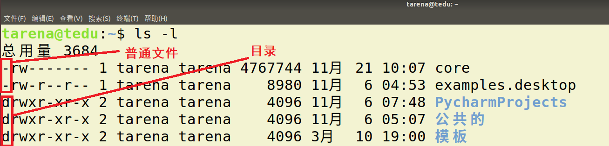
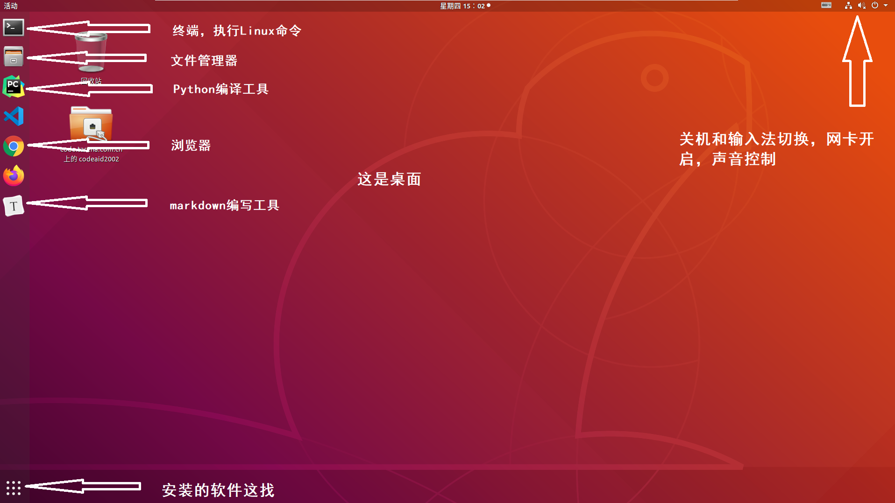
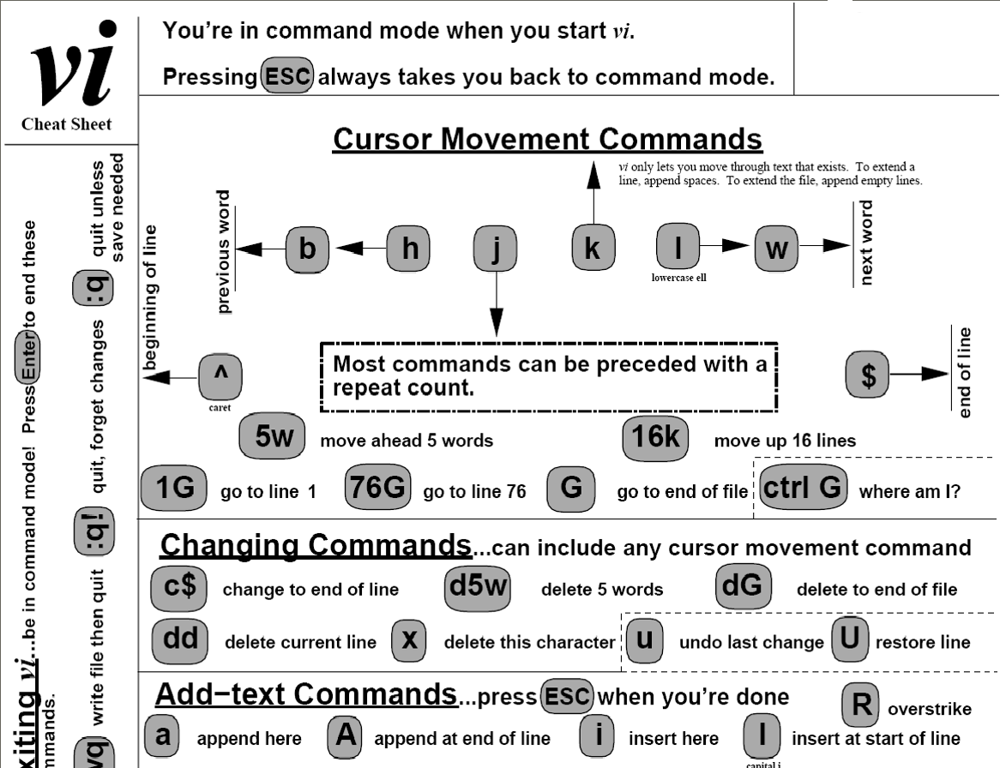
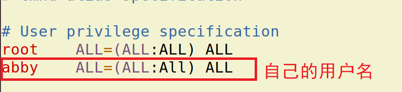
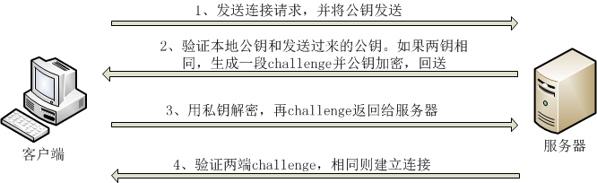

Linux 操作系统
| Python 教学部 |
|---|
| Author：吕泽 |
Linux 操作系统1. Linux操作系统认知1.1 操作系统（Operation System简称OS）*****1.2 Linux系统介绍*1.3 文件系统1.4 Ubuntu使用 2. Linux常用命令2.1 终端与命令行2.2 Linux常用命令-shell命令 2.2.1 帮助命令2.2.2 基础操作命令2.2.3 文件操作2.2.4 压缩解压day01 前情回顾2.2.5 权限管理2.2.6 显示展示命令2.2.7 其他命令3. Linux服务器环境3.1 vi编译器3.1.1 什么是vi3.1.2 学习目的3.1.3 操作使用3.2 添加用户3.2.1 基本概念3.2.2 用户管理命令3.3 软件安装3.4 ssh服务3.5 终端启动Python服务day02 前情回顾4.Linux总结
1. Linux操作系统认知
1.1 操作系统（Operation System简称OS）*****
定义
操作系统是管理计算机硬件与软件资源的计算机程序，同时也是计算机系统的内核与基石。操作系统需要处理如管理与配置内存、决定系统资源供需的优先次序、控制输入设备与输出设备、操作网络与管理文件系统等基本事务。

操作系统功能
- 管理好硬件设备，为用户提供调用方法
- 是计算机中最重要的系统环境
- 管理各种其他的软件和程序的运行
- 对系统中文件进行管理
操作系统分类
桌面系统：Windows ，macOS为主，图形界面良好用户群体大。
服务器系统：Linux，Unix为主，安全，稳定，费用低占有量大。windows占有率很低。
嵌入式系统：Linux为主，主要用于小型只能设备，如智能手机，机器人等。
1.2 Linux系统介绍*
Linux 诞生
1991 年 林纳斯（Linus） 就读于赫尔辛基大学期间，对 Unix 产生浓厚兴趣，林纳斯 经常要用他的终端 仿真器（Terminal Emulator） 去访问大学主机上的新闻组和邮件，为了方便读写和下载文件，他自己编写了磁盘驱动程序和文件系统，这些在后来成为了 Linux 第一个内核的雏形，当时，他年仅 21 岁！林纳斯利用C做工具，编写了 Linux 内核，一开始 Linux 并不能兼容 Unix只适用于 386，后来经过全世界的网友的帮助，最终能够兼容多种硬件。

Linux系统特点
- Linux是一款免费的操作系统
- 支持多种平台
- 支持多用户
- 具有非常强大的网络功能
Linux 应用领域*****
Linux 服务器 : 目前是服务器系统中最广泛一种。

桌面应用: 新版本的Linux系统特别在桌面应用方面进行了改进，达到相当的水平
嵌入式系统：由于Linux系统开放源代码，功能多样且具有极大的伸缩性，因此在嵌入式应用的领域有很广阔的应用市场。
Linux系统构成*****
内核: Linux操作系统的核心代码，是Linux系统的心脏，提供了系统的核心功能，用来与硬件交互。
Linux内核官网 : http://www.kernel.org
文件系统：通常指称管理磁盘数据的系统，可将数据以目录或文件的型式存储。每个文件系统都有自己的特殊格式与功能
命令解释器：它使得用户能够与操作系统进行交互，负责接收用户命令，然后调用操作系统功能。
应用软件：包含桌面系统和基础的软件操作工具等。

Linux发型版本
严格的来讲，Linux 只是一个系统内核，即计算机软件与硬件通讯之间的平台。一些组织或厂家将 Linux 内核与GNU软件（系统软件和工具）整合起来，并提供一些安装界面和系统设定与管理工具，这样就构成了一个发型套件，目前市面上较知名的发行版有（厂家）：Ubuntu、RedHat、CentOS、Debian、Fedora、SuSE、OpenSUSE、Arch Linux、SolusOS 等。
1.3 文件系统
定义
文件系统是计算机操作系统的重要的组成部分，用于组织和管理计算机存储设备上的大量文件。
文件系统结构***
- 熟悉的windows文件系统，分不同盘符

- Linux的文件组织中没有盘符。将根（/）作为整个文件系统的唯一起点，其他所有目录都从该点出发。

犹如一颗倒置的树，所有存储设备作为这颗树的一个子目录。

普通文件和目录
- 普通文件：包括文本，压缩包，音频视频等文件都是普通文件。
- 目录：即文件夹，在Linux系统下多称之为目录。

主要目录功能*
x1. /bin目录• /bin目录包含了引导启动所需的命令或普通用户可能用的命令(可能在引导启动后)。这些命令都是二进制文件的可执行程序(bin是binary----二进制的简称)，多是系统中重要的系统文件。2. /sbin目录• /sbin目录类似/bin，也用于存储二进制文件。因为其中的大部分文件多是系统管理员使用的基本的系统程序，所以虽然普通用户必要且允许时可以使用，但一般不给普通用户使用。3. /etc目录• /etc目录存放着各种系统配置文件，其中包括了用户信息文件/etc/ passwd，系统初始化文件/etc/rc等。linux正是因为这些文件才得以正常地运行。4. /root目录• /root 目录是超级用户的目录。5. /lib目录• /lib目录是根文件系统上的程序所需的共享库，存放了根文件系统程序运行所需的共享文件。这些文件包含了可被许多程序共享的代码，以避免每个程序都包含有相同的子程序的副本，故可以使得可执行文件变得更小，节省空间。6. /dev目录• /dev目录存放了设备文件，即设备驱动程序，用户通过这些文件访问外部设备。比如，用户可以通过访问/dev/mouse来访问鼠标的输入，就像访问其他文件一样。7. /usr文件系统• /usr 是个很重要的目录，通常这一文件系统很大，因为所有程序安装在这里。本地安装的程序和其他东西在/usr/local 下，因为这样可以在升级新版系统或新发行版时无须重新安装全部程序。8. /var文件系统• /var 包含系统一般运行时要改变的数据。通常这些数据所在的目录的大小是要经常变化或扩充的。9. /home• /home 普通用户的默认目录，在该目录下，每个用户拥有一个以用户名命名的文件夹。
绝对路径和相对路径表达***
- 绝对路径 ：指文件在文件系统中以根目录为起始点的准确位置描述。例如“/usr/bin/gnect”就是绝对路径。最要的标志就是以 ‘/’ 作为路径描述的开头。
- 相对路径 ：指相对于用户当前位置为起始点，对一个文件位置的逐层描述。例如，用户处在usr目录中时，只需要“games/gnect”就可确定这个文件。在相对路径描述时 . 表示当前目录, .. 表示上一级目录。
xxxxxxxxxxdemo： 绝对路径：ls /usr/local 相对路径ls ../../usr/localexercise: 绝对路径：cd /usr/local 相对路径cd ../../usr/local
1.4 Ubuntu使用
作为Linux发行版中的后起之秀，Ubuntu Linux在短短几年时间里便迅速成长为从Linux初学者到资深专家都十分青睐的发行版。由于Ubuntu Linux是开放源代码的自由软件，用户可以登录Ubuntu Linux的官方网址免费下载该软件的安装包。
Ubuntu官网：https://ubuntu.com/

2. Linux常用命令
学习目的
- Linux下有非常丰富的命令，可以用来完成大部分重要的Linux服务器操作维护功能，而且至今有些功能仍然通过命令操作比较方便。
- 实际工作中，大量服务器维护工作都是工程师通过远程控制来完成的，并没有图形界面，这时维护工作都需要通过命令来完成。
- 作为后端工程师，我们将来所写的代码都需要在服务器上运行，掌握基本的Linux 操作命令有助于我们将来对项目的部署和控制工作。
2.1 终端与命令行
- 终端 ： 使用命令对Linux系统进行操作的窗口
- 命令行：书写Linux命令的提示行

打开关闭终端方法
- 点击图形界面终端图标，通过ctrl+alt +t ,shift+ctrl + t , shift+ctrl+n 都可以快速打开一个终端。
- 通过图形界面关闭，或者在命令行输入exit。
终端字体大小控制
- 放大 摁住 ctrl 和 + 号 （不要忘了+号要使用shift）
- 缩小 摁住 ctrl 和 - 号
2.2 Linux常用命令-shell命令
命令格式
xxxxxxxxxxcommand [-options] [parameter]说明：command：命令名称，一般为英文单词或单词的缩写[-options]：命令选项，辅助命令进行功能细化，也可以省略parameter：传给命令的参数，可以是0个或多个 （文件或目录）
2.2.1 帮助命令
xxxxxxxxxxcommand --help说明：
显示
command命令的帮助信息
xxxxxxxxxxman command eg：man ls说明：
- 查阅
command命令的使用手册,摁q退出
2.2.2 基础操作命令
| 序号 | 命令 | 作用 |
|---|---|---|
| 01 | ls | 查看当前文件夹下的内容 |
| 02 | pwd | 查看当前所在文件夹 |
| 03 | cd [目录名] | 切换文件夹 |
| 04 | touch [文件名] | 如果文件不存在，新建文件 |
| 05 | mkdir [目录名] | 创建目录 |
| 06 | rm [文件名] | 删除指定的文件名 |
| 07 | cp | 复制一个文件 |
| 08 | mv | 移动一个文件 |
| 09 | clear | 清屏 |
部分命令细节说明
ls ： -l 展示详细信息，
-a展示隐藏文件。 ls -l ls -a ls -la
cd： 参数为绝对路径或者相对路径，直接cd表示回到主目录。
touch: 可以同时跟多个参数表示创建多个文件。
mkdir: -p选项可以创建层目录
cp：如果拷贝的是一个目录需要使用 -r ，同时这个命令有另存为的作用
mv: 即使移动目录页不需要选项，有重命名的作用。
rm：删除表示直接删除，无法找回，如果删除目录需要加 -r选项
clear：等同于ctrl-l，清空屏幕。
Crtl + c 中断之前的程序命令（出错时使用）
小技巧： 使用Tab键可以自动补全文件名，目录名等信息
通配符
作用：对一类文件名称的书写进行简化，例如file1.txt、file2.txt、file3.txt……，用户不必一一输入文件名，可以使用通配符完成。
通配符 含义 实例 星号（*） 匹配任意长度的字符串（0-n） 用file_*.txt，匹配file_wang.txt、file_Lee.txt、file_Liu.txt 问号（?） 匹配一个长度的字符 用flie_?.txt，匹配file_1.txt、file_2.txt、file_3.txt 方括号（[…]） 匹配其中指定的一个字符(或) 用file_[otr].txt，匹配file_o.txt、file_r.txt和file_t.txt 方括号（[ - ]） 匹配指定的一个字符范围 用file_[a-z/A-Z/0-9].txt，匹配file_a.txt、file_b.txt，直到file_z.txt
2.2.3 文件操作
| 序号 | 命令 | 作用 |
|---|---|---|
| 01 | cat 文件名 | 查看文件内容、创建文件、文件合并、追加文件内容等功能 |
| 02 | head 文件名 | 显示文件头部 |
| 03 | tail 文件名 | 显示文件尾部 |
| 04 | grep 搜索文本 文件名 | 搜索文本文件内容 |
| 05 | find 路径 -name 文件名 | 查找文件 |
| 06 | file 文件名 | 查看文件类型 |
| 07 | wc 文件名 | 查看文件行数，单词数等信息 |
| 08 | diff 文件1 文件2 | 对比两个文件差异 |
部分命令细节说明
head，tail ： 选项-n，n表示一个数字，即可指定查看前n行或者后n行，不加选项默认查看10行。
grep ： -n 用于显示行号，-i忽略大小写
wc : -c 表示查看多少字符，-l查看多少行，-w 查看多少单词。如果不加选项则显示这三项。
find：会从指定目录及其所有子目录中查询搜索文件。
xxxxxxxxxx2.2.3练习 怎么查看一个Python模块中定义了多少函数和方法grep "def" exercise06.py | wc -l
2.2.4 压缩解压
| 序号 | 命令 | 作用 |
|---|---|---|
| 01 | zip ，unzip | 将文件压缩为zip格式/将zip格式文件解压 |
| 02 | gzip，gunzip | 将文件压缩为gz格式/将gz格式文件解压 |
| 03 | bzip2,bunzip2 | 将文件压缩为bz2格式/将bz2格式文件解压 |
| 04 | tar | 对gz或者bz2格式进行压缩解压 |
部分命令细节说明
zip： 用于常与windows交互的情况，-r选项可以压缩目录
zip test.zip filelist
unzip test.zip
gzip，bzip2：不常用，因为压缩或者解压后源文件就不再了，而且只能对一个文件操作
- gzip abc.py gunzip
- bzip2 abc.py bunzip2
tar：-cjf 用于压缩bz2格式文件 ，-czf用于压缩gz格式文件，-xvf用于解压文件,兼容了gzip和bzip2命令的功能。
tar -cjf file.tar.bz2 file1 file2 tar -czf file.tar.gz file1 file2
tar -xvf file.tar.gz
day01 前情回顾


xxxxxxxxxx后端1. 什么是操作系统 OS2. Linux特点：开源 网络功能强大 跨平台 多用户构成: 内核 文件系统 命令解释器 应用使用： 服务器系统 嵌入式平台 桌面系统3. 文件系统* 什么是文件系统* Linux 文件系统的结构 --》 树形结构* 文件位置的表达方式--》 绝对路径 相对路径4. Linux命令 （shell命令--》解释器 bash）命令 选项 参数manls -lacd mkdir rm cp mv cat touch grepwczip tar sudo通配符 ： * ? []管道 ： |
2.2.5 权限管理
| 序号 | 命令 | 作用 |
|---|---|---|
| 01 | sudo | 放在一个命令前，表示使用管理员权限执行 |
| 02 | chmod | 修改文件权限 |
部分命令细节说明
sudo： 在打开终端第一次使用sudo时需要输入密码
chmod在设置权限时，可以字母也可以使用三个数字分别对应 拥有者 ／ 组 和 其他 用户的权限- u: 当前用户 g:当前用户所在组 o:其他用户

xxxxxxxxxx直接修改文件|目录的 读|写|执行 权限，但是不能精确到 拥有者|组|其他chmod augo+/-rwx 文件名/目录名xxxxxxxxxx练习1. 修改一个文件 权限为 u->可读写 g->可读写 o->只读chmod 664 2.txt 
例如：
777===>u=rwx,g=rwx,o=rwx755===>u=rwx,g=rx,o=rx644===>u=rw,g=r,o=r
2.2.6 显示展示命令
| 序号 | 命令 | 作用 |
|---|---|---|
| 01 | echo | 向终端打印内容 |
| 02 | date | 显示当前时间 |
| 03 | df | 显示磁盘剩余空间 |
| 04 | whoami | 显示当前用户 |
| 05 | which | 显示执行命令所在位置 |
部分命令细节说明
- echo ： -n表示打印完成不换行
- df: -h选项以M为单位显示，-T显示文件系统类型 ext4的为磁盘
- which：命令也是一个程序，实际就是显示程序所在位置
输出重定向
重定向符 含义 实例 > file 将file文件重定向为输出源，新建模式 echo "hello world" > out.txt，将执行结果，写到out.txt文件中，若有同名文件将被删除/原文件内容被清空 >> file 将file文件重定向为输出源，追加模式 ls /usr >> Lsoutput.txt，将ls /usr的执行结果，追加到Lsoutput.txt文件已有内容后 管道
管道可以把一系列命令连接起来，意味着第一个命令的输出将作为第二个命令的输入，通过管道传递给第二个命令，第二个命令的输出又将作为第三个命令的输入，以此类推。
xxxxxxxxxx ls | grep 'test'
2.2.7 其他命令
| 序号 | 命令 | 作用 |
|---|---|---|
| 01 | shutdown | 关机或者重启 |
| 02 | ln | 创建链接 |
部分命令细节说明
shutdown：
shutdown -r now 立即重启
shutdown now 立即关机
shutdown +10 10分钟后关机
shutdown -c 取消关机计划
ln : 一般使用 -s 选项 创建软链接绝对路径查找，相当于快捷方式，如果跨目录创建要使用绝对路径。
xxxxxxxxxxln -s hello.py helloln -s /home/tarena/month02/day02/file.txt /home/tarena/file 跨目录ln -s file.txt file 同目录 （rm file或重命名或改变路径均失效）
3. Linux服务器环境
3.1 vi编译器
3.1.1 什么是vi
vi是Linux操作系统中一个自带的编辑器。没有图形界面，只能编译文本内容，没有字体段落等设置，通过命令强大的命令完成一系列的编写工作。
3.1.2 学习目的
- 在实际工作中，要对 服务器上的文件进行 简单 的修改，使用
vi进行快速的编辑即可。 - 对一些配置文件的修改，需要一定的权限，这时vi编辑器是最佳选择。
- vi 编辑器在 系统管理、服务器管理编辑文件时，其功能不是图形界面的编辑器能比拟的。
3.1.3 操作使用
- 打开和新建文件
xxxxxxxxxx$ vi 文件名如果文件已经存在，会直接打开该文件如果文件不存在，会新建一个文件工作模式
命令模式
- 打开文件首先进入命令模式，是使用
vi的 入口 - 通过 命令 对文件进行常规的编辑操作，例如：定位、翻页、复制、粘贴、删除……
- 在其他图形编辑器下，通过 快捷键 或者 鼠标 实现的操作，都在 命令模式 下实现
- 打开文件首先进入命令模式，是使用
底行模式 —— 执行 保存、退出 等操作
- 要退出
vi返回到控制台，需要在末行模式下输入命令 - 末行模式 是
vi的 出口
- 要退出
编辑模式 —— 正常的编辑文字

- 进入编辑模式命令
| 命令 | 英文 | 功能 | 常用 |
|---|---|---|---|
| i | insert | 在当前字符前插入文本 | 最常用 |
| I | insert | 在行首插入文本 | 较常用 |
| a | append | 在当前字符后添加文本 | |
| A | append | 在行末添加文本 | 较常用 |
| o | 在当前行后面插入一空行 | 最常用 | |
| O | 在当前行前面插入一空行 | 常用 |
- 底行模式常用命令
| 命令 | 功能 |
|---|---|
| w | 保存 |
| q | 退出，如果没有保存，不允许退出 |
| q! | 强行退出，不保存退出 |
| wq | 保存并退出 |
命令模式常用命令
- 1）光标移动
命令 功能 h 向左 j 向下 k 向上 l 向右 - 2）行内移动
命令 功能 w 向后移动一个单词 b 向前移动一个单词 0 行首 ^ 行首，第一个不是空白字符的位置 $ 行尾 - 3) 行数移动
命令 功能 gg 文件顶部 G 文件末尾 :数字 移动到 数字 对应行数
- 撤销和恢复撤销
| 命令 | 功能 |
|---|---|
| u | 撤销上次命令 |
| CTRL + r | 恢复撤销的命令 |
- 删除文本
| 命令 | 功能 |
|---|---|
| x | 删除光标所在字符，或者选中文字 |
| c | 和移动命令连用,删除光标所在位置到指定位置内容 |
xxxxxxxxxxcw # 从光标位置删除到单词末尾c0 # 从光标位置删除到一行的起始位置cb # 从光标位置删除到单词开头
- 剪切、复制、粘贴（crtl+shift+c/v）
| 命令 | 功能 |
|---|---|
| yy | 复制一行，可以 nyy 复制多行 |
| dd | 删除光标所在行，可以 ndd 复制多行 |
| p | 粘贴 paste |
- 替换
| 命令 | 功能 | 工作模式 |
|---|---|---|
| r | 替换当前字符 | 命令模式 |
| R | 替换当前行光标后的字符 | 替换模式 |
| :%s/str/replace/g | 替换str为replace | 底行模式 |
R命令可以进入 替换模式，替换完成后，按下ESC可以回到 命令模式
- 查找
| 命令 | 功能 |
|---|---|
| /str | 查找 str |
查找到指定内容之后，使用
n查找下一个出现的位置

xxxxxxxxxx1.vi file.txt 命令模式2.i --插入- print（） 编辑模式（记事本功能）3.Esc --命令状态-- 命令模式4.：wq --保存退出-- 底行模式 （强行暴力退出，rm file.txt.swp方式处理）练习：编写一个Python小程序，求100以内所有奇数之积是多少 要求使用vi 编写result = 1for i in range(1,101):if i % 2 != 0:result *= iprint(result)
3.2 添加用户
3.2.1 基本概念
用户：Linux操作系统可以有不同的用户，这是系统管理的重要一环，不同的用户有自己独立的空间内容。
用户组：为了方便对用户管理，Linux操作系统使用用户组的概念。将不同的用户添加到对应的组中，可以方便用户设置权限的设置。
root用户：Linux系统中的root用户通常用于系统的维护和管理，对操作系统的所有资源具有所有访问权限，一般工作中不会使用root用户进行系统操作，防止一些误操作带来系统损坏。
3.2.2 用户管理命令
| 序号 | 命令 | 作用 |
|---|---|---|
| 01 | groupadd 组名 | 添加组 |
| 02 | groupdel 组名 | 删除组 |
| 03 | useradd -m 用户 -g 组 | 添加用户 |
| 04 | passwd 用户名 | 设置用户密码 |
| 05 | userdel -r 用户 | 删除用户 |
| 06 | su 用户 | 切换用户 |
useradd : -m 表示添加用户时添加主目录，-g表示选择用户所在组，如果不写默认会创建一个与用户同名的组。
xxxxxxxxxxuseradd -m levi #1passwd ： 设置密码，设置之后才能切换新用户登录 #2
设置密码后为新用户添加sudo权限,打开sudoers文件增加如下内容，然后 :w! 强制保存 :q 退出
xxxxxxxxxxsudo vi /etc/sudoers #3
xxxxxxxxxxpasswd levi # 修改解释器为bash新版本 sh为旧版本注意：1. 新创建的用户和密码信息存储在 /etc/passwd文件中2. 如果切换用户终端命令行只有一个$ 提示，则vi打开这个文件，将该用户对应的内容修改
xxxxxxxxxx切换用户 #4 切换至新用户sudo vi /etc/passwd #5 修改解释器为bash新版本 sh为旧版本 （注销重启生效）userdel: 一般使用-r 彻底删除，如果删除失败说明刚刚使用了改用户，需要重启再删除。或者执行下面命令。sudo userdel -r del sudo kill 10917

3.3 软件安装
Linux下安装的软件包是 deb格式软件包。由于当时Linux系统中软件包存在复杂的依赖关系。因而，通常使用网络安装。
| 作用 | 命令 |
|---|---|
| 升级软件包/软件源（见下图） | apt update |
| 安装软件 | apt install |
| 卸载软件 | apt remove --purge |
| 删除缓存的软件安装包 | apt clean |

- 注意事项 ： 安装软件包通常需要使用管理员权限。
- 软件包下载位置：/var/cache/apt/archives
xxxxxxxxxxsudo apt updatesudo apt install sl # 安装sudo apt remove --purge sl # 彻底卸载(youdao-dict) 再安装slls /var/cache/apt/archives #查看缓存sudo apt clean
xxxxxxxxxxcookie :下载软件包拖拽至ubuntu安装本地包sudo dpkg -i xxxx.deb (依赖关系错误影响其他软件安装)解决依赖关系sudo apt --fix-broken install
3.4 ssh服务
ssh是一种安全协议，主要用于给远程登录会话数据进行加密，保证数据传输的安全。在数据传输方面有很多应用。之前说到，实际工作中经常需要远程访问服务器，ssh就是通用的远程访问服务器的方法。
安装启动
安装ssh服务 ： sudo apt install openssh-server
查看ssh服务状态 ： ps -e|grep ssh

启动和关闭 ：
sudo service ssh start/restart/stop
常用命令
| 序号 | 命令 | 作用 |
|---|---|---|
| 01 | ssh 用户名@ip | 登录远程主机 |
| 02 | scp 用户名@ip:文件名或路径 用户名@ip:文件名或路径 | 远程复制文件 |
ssh登录
xxxxxxxxxxssh levi@192.168.100.5 # 登录exit # 退出xxxxxxxxxx练习：本机打开两个终端相互访问<!--ifconfig 查看本机IP地址--><!--ssh tarena@172.16.4.131--> 本机打开两个终端访问

scp拷贝
xxxxxxxxxx# 注意：`:` 后面的路径写绝对路径scp demo.py levi@192.168.100.5:/home/tarena# 把远程主目录下demo.py文件 复制到本地当前目录下scp levi@192.168.100.5:/home/tarena/demo.py .# 加上 -r 选项可以传送文件夹scp -r demo levi@192.168.100.5:/home/tarena/xxxxxxxxxx练习远程访问华为云：ssh root@119.3.180.134本地文件拷贝到华为云 scp -r file root@119.3.180.134:/root （目录需加-r,文件不需加-r）华为云文件拷贝到本地 scp -r root@119.3.180.134:/root/file /home/tarena(简写.)注：本质哪里是远程 哪里加前缀 root@119.3.180.134:
ssh秘钥
什么时候使用： 如果使用的客户端个人计算机是自己独有的计算机，经常通过ssh访问服务器，此时不想频繁输入密码，则可以使用秘钥处理。

使用方法
xxxxxxxxxx1. 在个人计算机中生产秘钥对 ： ssh-keygen 执行以后会在主目录下生成一个.ssh文件夹,其中包含私钥文件id_rsa和公钥文件id_rsa.pub。2. 在服务器主机上创建文件~/.ssh/authorized_keys，将信任的计算机的id_rsa.pub文件内容追加到服务器authorized_keys文件中，并修改其权限为777。xxxxxxxxxx个人电脑1.ssh-keygen 一路enter (在个人对生成秘钥对，不是服务器端)2.cd .ssh3.ls4.cat id_rsa.pub(复制公钥文件内容)服务器5.ssh root@119.3.180.1346.ls -a <!--自带.ssh-->7.cd .ssh8.ls -->authorized_keys 发现其中有authorized_keys9.echo"公钥文件内容">>authorized_keys经过以上8步 个人电脑访问不再需要密码了
3.5 终端启动Python服务
在服务器中并没有pycharm这些集成编译工具，所有当我们最后将程序部署在服务器上执行时，往往需要通过终端运行python程序。
- 编写python程序在第一行增加解释器声明

- 修改文件的执行权限

- 执行代码

day02 前情回顾
xxxxxxxxxx1. Linux命令chmodecholnshutdown* 输出重定向 ls > file> >>2. vi编辑器编辑 命令 底行:w :q :w! /yy dd pi o esc3. 添加用户* useradd* passwd* sudo vi /etc/sudoers* 切换用户* sudo vi /etc/passwd4. 软件安装sudo apt install xxxsudo remove --purge xxx5. sshssh 远程登录ssh tarena@114.115.116.117scp 远程拷贝scp myfile tarena@114.115.116.117:/rootscp tarena@114.115.116.117:/root/file myfile6. 终端运行 Python程序python3 xx.py第二种：#!/usr/bin/python3chmod 766 xx.py./xx.py
4.Linux总结
什么是操作系统，操作系统的作用和Linux操作系统特点
操作系统OS
- Linus：操作系统是个大的软件，这个软件直接运行在硬件之上，来提供给其他软件运行平台与运行环境，让其他软件更好的软件
- 操作系统是管理（连接）计算机硬件与软件资源的计算机程序，同时也是计算机系统(智能)的内核与基石。操作系统需要处理如管理与配置内存、决定系统资源供需的优先次序、控制输入设备与输出设备、操作网络与管理文件系统等基本事务。
操作系统功能
- 管理好硬件设备，为用户提供调用方法
- 是计算机中最重要的系统环境
- 管理各种其他的软件和程序的运行
- 对系统中文件进行管理
Linux操作系统特点
- 特点：开源 网络功能强大 跨平台 多用户
- 使用： 服务器系统 嵌入式平台 桌面系统
Linux 操作系统构成和文件系统结构
Linux操作系统构成: 内核 文件系统 命令解释器 应用
文件系统构成：文件系统是计算机操作系统的重要的组成部分，用于组织和管理计算机存储设备上的大量文件。
- 普通文件：包括文本，压缩包，音频视频等文件都是普通文件。
- 目录：即文件夹，在Linux系统下多称之为目录。
Linux 常规命令 （重点）
知道服务器常规操作: vi ssh连接
vi作用--要能完成基本编写功能
- 弥补了在服务器端没有丰富的界面命令/功能的编译器的不足
- 优点1：占用空间小
- 优点2：linux自带，修改系统带有权限的文件时具有独特的用处
- 优点3：命令非常丰富，可以完成相对比较复杂的功能